PX에서 제일 인기있는 라면 레시피를 소개
불닭볶음면 + 스파게티 + 참치
불닭볶음면 + 공화춘 + 참치
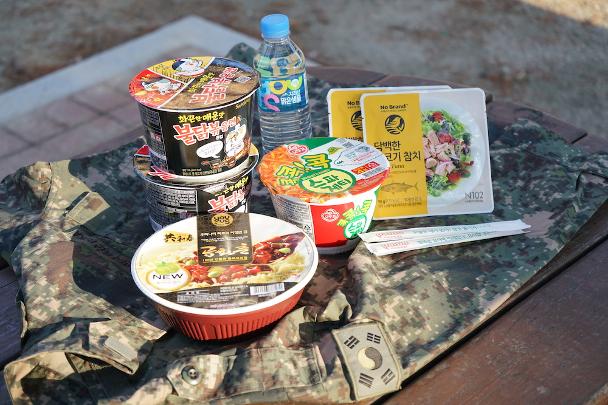근무가 끝나고 오늘의 식단을 보고 실망한 혜리
혜리: 김병장님 오늘 반찬 실화입니까...?
김병장: 이런 젠장! 내가 말년에 해물비빔소스라니!!
혜리: ㅠㅠ
김병장: 그렇다면 전설의 레시피를 알려주지
혜리: 빨리 먹고싶습니다!
불공화 레시피
1. 재료를 준비한다.
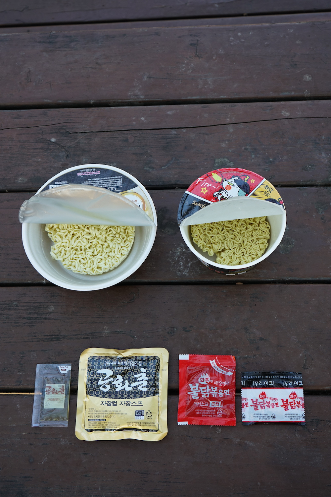2. 뜨거운 물을 붓고 기다린 후 잘 저어준다.
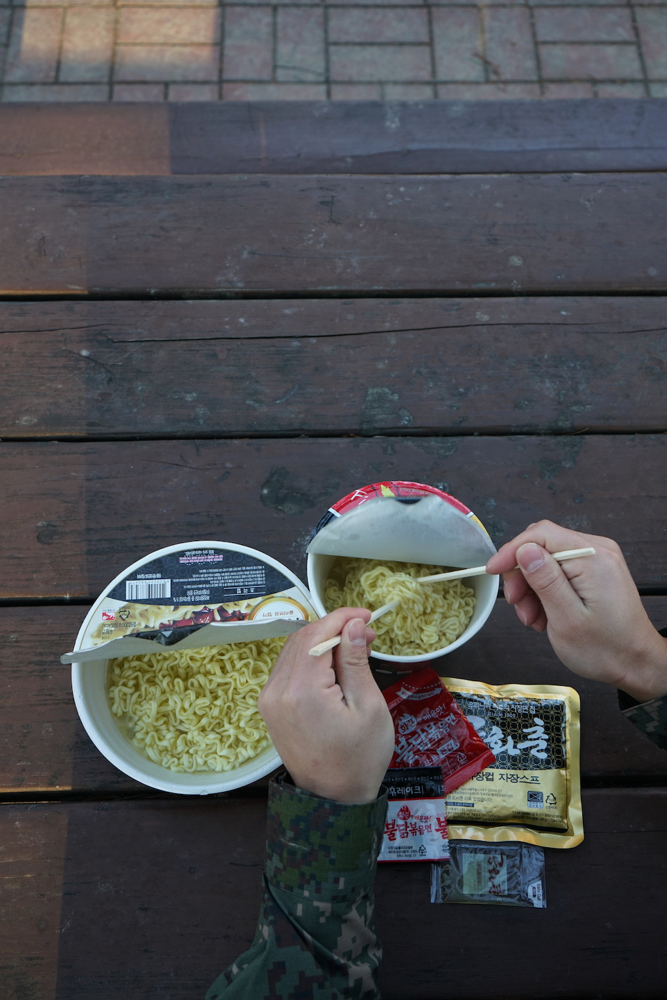3. 물을 한쪽 컵에 버린다.
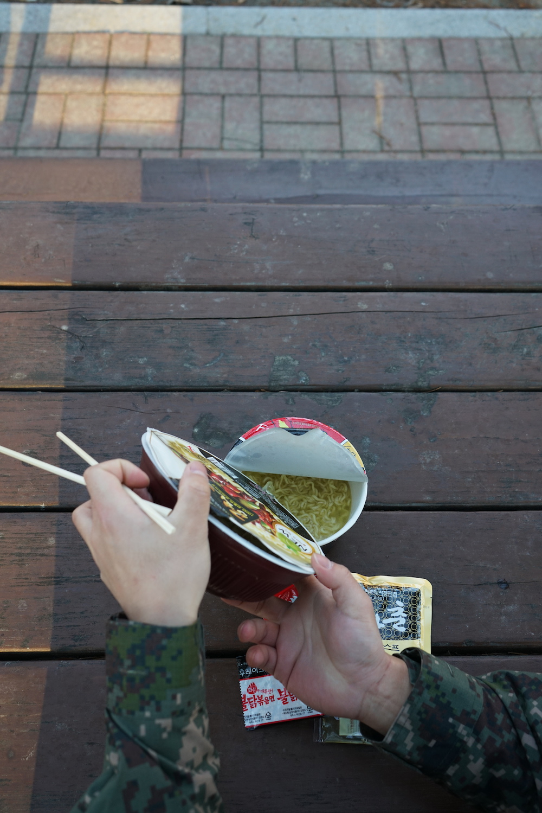4. 면을 건져온다.
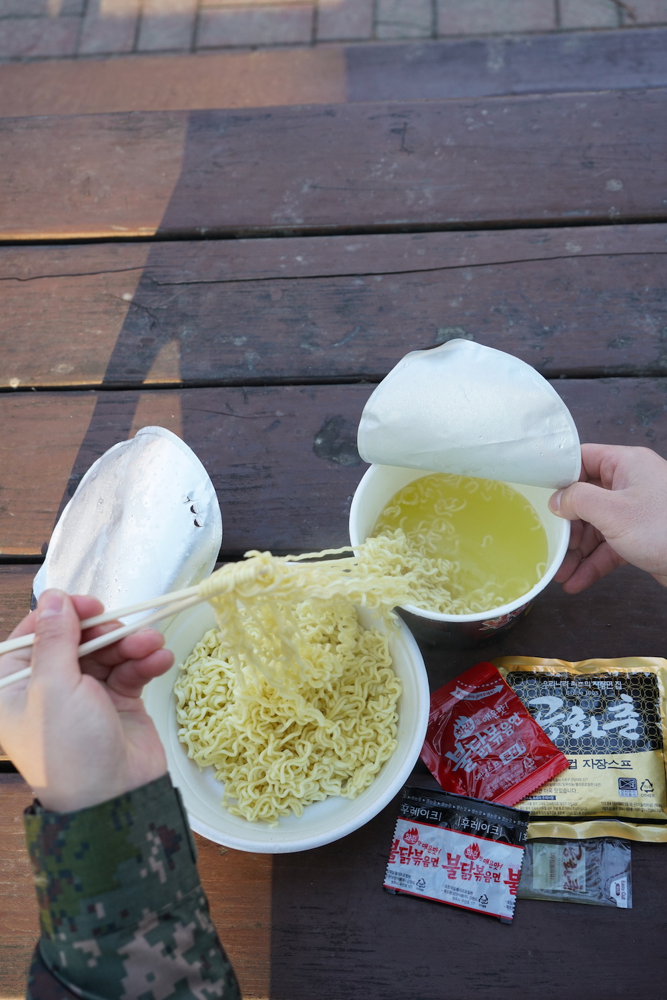5. 소스를 차례대로 뿌린 후 참치를 3/4 만큼 넣어준다. (불닭 후레이크는 제외)
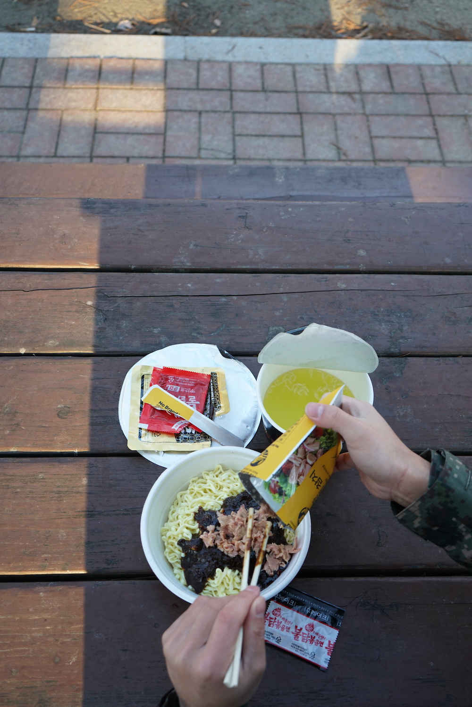6. 나무 젓가락으로 골고루 잘 섞어 준다.
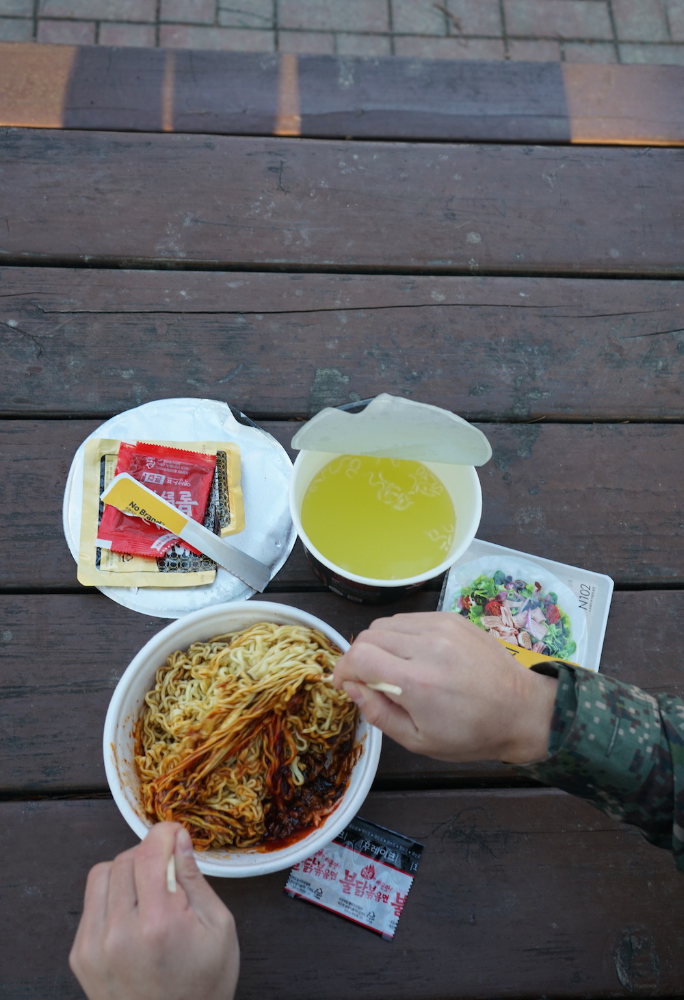7. 남은 참치를 올리고 불닭 후레이크를 뿌리면 완성이다!
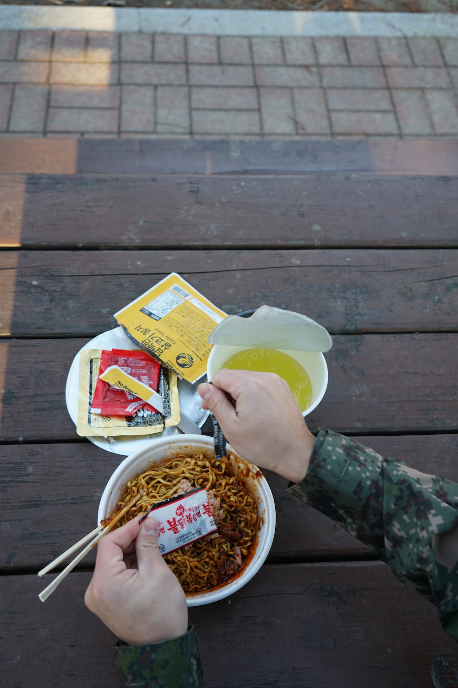 완성된 PX인기상품 "불공화" 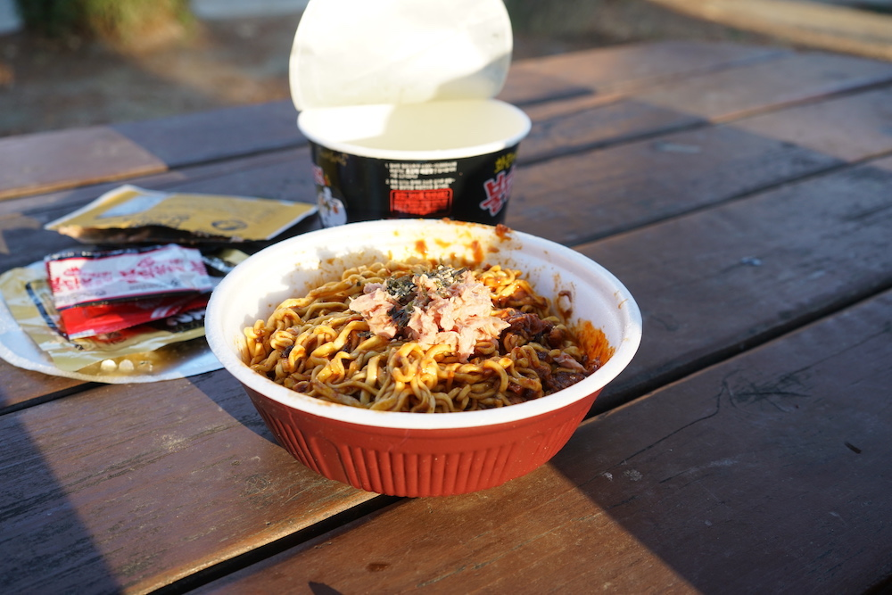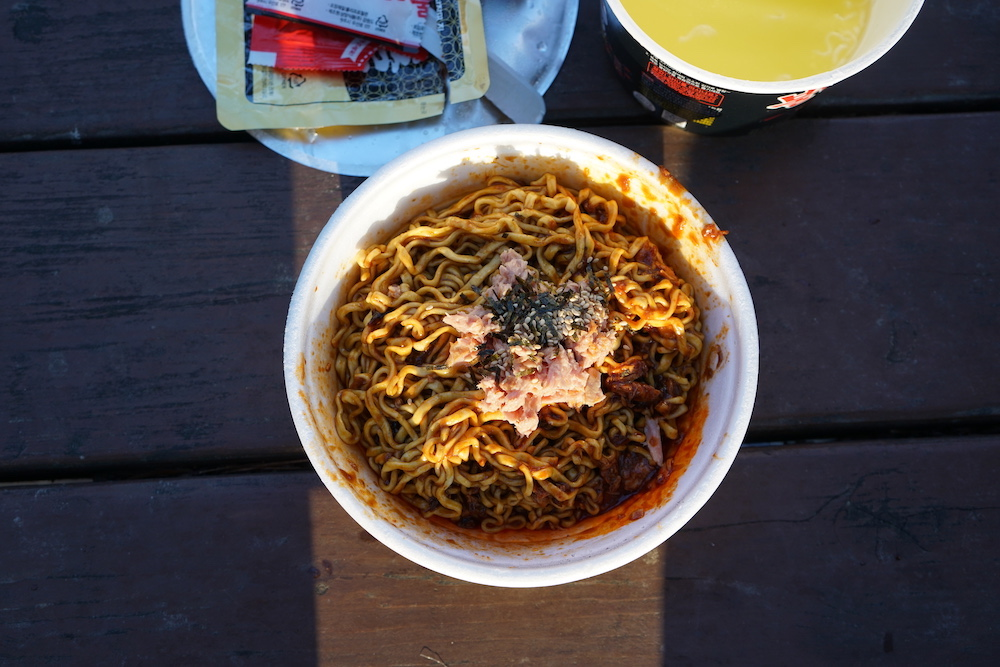
중대장: 중대장은 너희에게 오늘만큼은 실망하지 않았다!
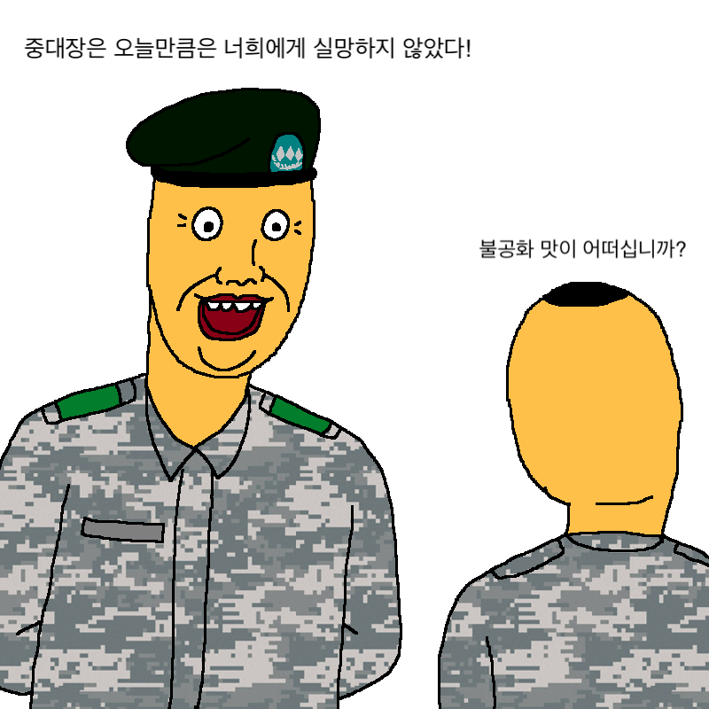엄청 맛있음
맛있게 매움
참치 유무로 맛이 결정됨
군필자에겐 추억의 맛
누구나 쉽게 만들수 있음
저렴하고 배엄청부름